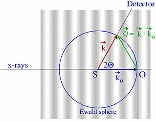

Interactive examples: Ewald sphere

Basic examples
Single atom
Pair of atoms
Row of atoms
Interactive examples
1D crystal builder
Polygons of atoms
Different atoms
Ewald sphere
Units
Goto
Contents
Here are a few questions to explore:
- Recall the scattering vector diagram presented in the lecture when discussing the case of two electrons. The scattering process is illustrated on the right. 
- When executing this example you will see a plot that shows the 2D scattering intensity in the hk plane. The blue circle shows the path for the THETA scan which can be seen as blue graph. The thick green line shows the scan DISCUS presented, again shown as green graph. Both result from the same basic pattern ! Just hit RUN and see for yourself ..
- Now start changing the distance and orientation (within the xy-plane) of the electron pair and describe their influence.
- Finally investigate the effect of the wavelength of the X-rays. Typical values used in laboratory sources are Mo=0.71 A, Cu=1.54 A and Ag=0.55 A.